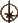

示例情况和困难如下表所示。 最初设定的难度是为了反映对于没有相关事件类型先前经验的人来说的可怕情况。 根据具体情况，检定的难度也可以升级。 升级通常取决于检定的情况或引起恐惧的生物或角色的细节。 例如，面对一个穿着黑色盔甲并携带光剑的冷酷战士至少可能是一个艰巨(
 )难度的检定。然而，如果知道这名战士是追捕并杀死绝地武士的达斯·维达，并且是西斯黑暗尊主，则可以将检定难度提高三倍。GM可以添加
)难度的检定。然而，如果知道这名战士是追捕并杀死绝地武士的达斯·维达，并且是西斯黑暗尊主，则可以将检定难度提高三倍。GM可以添加 来代表情况的其他方面，例如意外，如果强大的盟友或其他援助支持角色的决心，他也可以添加和其他有益的骰子。
来代表情况的其他方面，例如意外，如果强大的盟友或其他援助支持角色的决心，他也可以添加和其他有益的骰子。
在游戏中，角色会遭遇无数可怕的事件、生物和情况。 危险的生物潜伏在帝国控制的行星的黑暗中，或者在战场上被用作震撼和敬畏的武器。 帝国依靠怀疑、恐怖和难以言喻的行为来将银河系牢牢控制在自己的手中。 战争、饥荒、战斗、可怕的敌人和可怕的环境危害甚至可能让最坚强的角色产生恐惧。恐惧会干扰角色的行动和目标。 它可能会降低角色的效率，让他犹豫，或者导致他逃跑。
在游戏中，恐惧可以通过纪律(Disciplineskill)技能以及偶尔的冷静(Cool)技能来抵消。 与任何其他技能检定一样，GM 设置难度并将适当的骰子添加到角色的骰子池中。 解释骰子池结果是确定恐惧效果的关键，即使结果是成功。纪律或冷静技能检定代表角色面对恐惧时采取行动的能力，而不一定是角色可能感受到的恐惧程度。
任何时候使用纪律或冷静来对抗恐惧，都称为恐惧检定。 并非所有可怕的情况都需要进行恐惧检定。 此类检定应仅限于异常情况或角色第一次经历特别可怕的情况。 冲锋队的伏击不需要恐惧检定。但是，如果一个角色突然掉入有兰克兽的深渊，则进行检定是合适的。
恐惧检定的频率由GM决定。 通常，一旦进行了恐惧检定，GM就不应该在同一次遭遇中要求对同一来源进行另一次检定，除非情况发生重大变化。 在恐惧是关键要素的故事中，GM可能需要更多的恐惧检定。 一个角色看着他的同伴在他面前死去或看着他的家乡星球被摧毁，可能需要进行更多的检定以反映他持续的担忧和压力。
通常，恐惧的影响是由纪律检定的结果决定的。 然而。 如果角色有时间为这种情况做好准备，并且没有感到意外，那么 GM 可能会允许角色进行冷静检定。
恐惧检定的难度是环境和经历恐惧的个人的结合。 没有两个人对可怕情况的反应是相同的。 未经训练的平民在战斗爆发时可能会因恐惧而僵住，而训练有素的士兵则可以自信而有效地行动。这并不是说士兵就一定无所畏惧； 这仅仅意味着他能够更好地应对恐惧。
示例情况和困难如下表所示。 最初设定的难度是为了反映对于没有相关事件类型先前经验的人来说的可怕情况。 根据具体情况，检定的难度也可以升级。 升级通常取决于检定的情况或引起恐惧的生物或角色的细节。 例如，面对一个穿着黑色盔甲并携带光剑的冷酷战士至少可能是一个艰巨()难度的检定。然而，如果知道这名战士是追捕并杀死绝地武士的达斯·维达，并且是西斯黑暗尊主，则可以将检定难度提高三倍。GM可以添加来代表情况的其他方面，例如意外，如果强大的盟友或其他援助支持角色的决心，他也可以添加和其他有益的骰子。
| 恐惧状态 | 难度 | 例子 |
| 最小程度的恐惧 | 容易() |
战斗力稍弱；危险程度最低的生物；对个人安全构成轻微威胁。 |
| 中等程度的恐惧 | 普通() |
战斗力明显处于劣势；具有危险攻击性的生物；对某人的安全构成可信的威胁，并对某人的生命构成最小的威胁。 |
| 非常恐惧 | 困难() |
战场战斗;一群具有攻击性的生物；对个人安全构成重大威胁，并对个人生命造成中等程度的恐惧。 |
| 极度恐惧 | 艰巨() |
可怕的激烈战斗；面对巨大而危险的生物，如兰克兽；对生命的极度恐惧。 |
| 惊恐万状 | 不可能() |
绝望而可怕的处境； 与自己无法理解的事物作斗争； 受到一队 AT-AT 的攻击； 恐惧如此严重以至于理智崩溃。 |
| 面对被认为是危险的事物 | 添加一个难度升级 | 与帝国情报人员对峙；与波巴·费特战斗。 |
| 面对已知的危险且非常罕见的事物。 | 添加二个难度升级 | 被困在克雷特龙的食道里。 |
| 面对已知极其危险且独特的事物 | 添加三个难度升级 | 与皇帝战斗。 |
GM 应该解释骰子池的结果。某些生物或天赋可能会决定它们触发的恐惧检查结果的各个方面。 GM 还可以创造额外的效果。 无论成功还是失败，和都会产生影响。 如果需要进行多次恐惧检查，则后续掷骰的和可能会抵消早期掷骰的效果。
建议的最小失败或负面影响：
失败：角色在遭遇中采取的每个行动都会加上。
威胁：角色遭受的压力值等于的个数。如果检定产生或更多，则角色可以在第一回合进入震惊(staggered)状态。
绝望：角色极度恐惧，这使得所有检查的难度增加一，直到遭遇结束。此外，角色还会产生冲突，详见下文“恐惧导致愤怒……”部分。
建议的成功或积极影响：
成功或多次成功：角色避免任何恐惧效果，除了触发的效果。
优势：在角色的第一次检定中获得。如果花费多个，则将授予其他玩家的第一次检定。
胜利：可以用来取消之前所有恐惧检定的惩罚，或者用来确保角色在遭遇过程中不需要进行任何额外的恐惧检定，无论来源如何。
恐惧可能会以另一种方式影响具有道德分数的角色。GM 可能会给予与失败检查的检查难度相等的冲突量，而不是建议的失败或负面影响。当PC在检查中得到结果时，除了的正常影响之外，这种情况会自动发生。 冲突点不能在随后的恐惧检定中通过来消除。